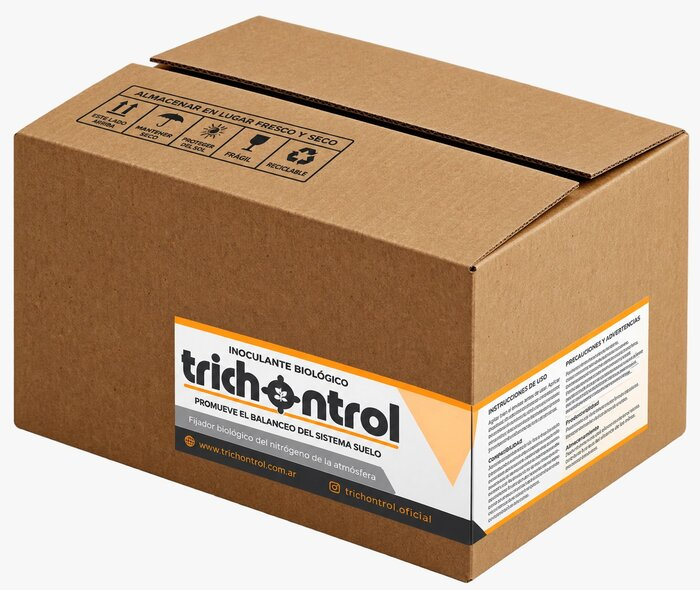

Trichontrol
Fertilizante biológico y promotor de crecimiento formulado con cepas exclusivas de Trichoderma harzianum seleccionadas y aisladas de suelos argentinos. Favorece el desarrollo radicular, mejora la absorción de nutrientes, incrementa la resistencia de las plantas y contribuye a la protección frente a plagas y enfermedades.